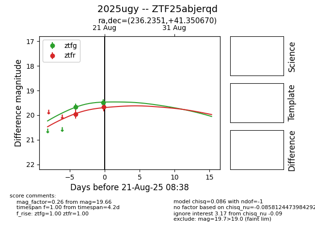

Target 2025ugy at 2025-08-21 08:38, see:
FINK: fink-portal.org/ZTF25abjerqd
Lasair: lasair-ztf.lsst.ac.uk/objects/ZTF25abjerqd
ALeRCE: alerce.online/object/ZTF25abjerqd
TNS: wis-tns.org/object/2025ugy
YSE: ziggy.ucolick.org/yse/transient_detail/2025ugy
alt names
ZTF25abjerqd (ztf,alerce)
2025ugy (tns,yse)
coordinates:
equatorial (ra, dec) = (236.2351,+41.35067)
galactic (l, b) = (66.2727,+51.89397)
photometry
last ztfg=19.48, ztfr=19.66
2 ztfg, 2 ztfr detections
